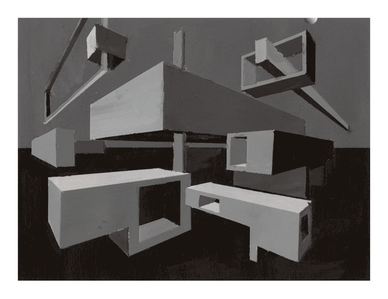
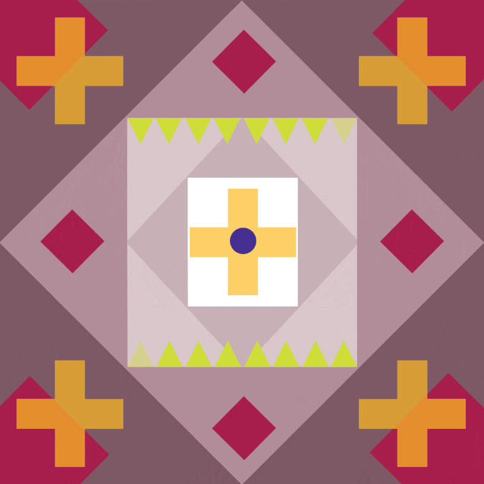

Design
Figma and Website Redesign
Generic Website Redesign
In one class I was given a generic website and two themes to create tow basic redesigns.
Hyper Punk

Cunstructivism

Preview


Origional Redesign for Ultimate Guitar
Before I had my final redesign of Ultimate Guitar, I made this draft design. I ended up scratching it and going in a completely different direction for my Case Study.
Visual Studies Section One: Black, White, and Greyscale
In this class we focused on becoming familiar with different adobe products. I learned about the basics of composition and design along with physical art techniques.
Perspective Animation


Symmetry
Expressive Line


Value Translation


Notan Project
A Fine Line
Visual Studies Section Two: Color
Next, I focused on color and color interaction. In this section we learned about color theory, space, movement, and design.


Polygraph Portrait
Same Color Different Color


Different Look Same Look
Transparency and Movement
Graphic Design Projects
Delta Gamma Recruitment Posters